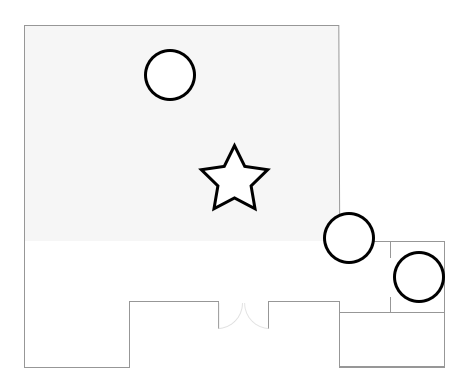
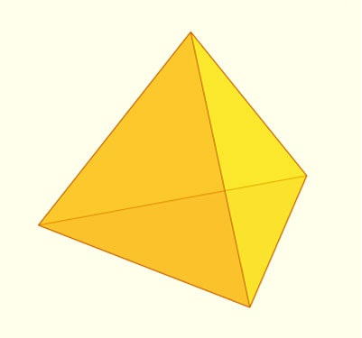

STUDIOLAB
Puzzles
In this portion of the initiative you will be exposed to challenges of both the inductive and deductive variety. Puzzles come in many shapes and forms but abstractly they are well constructed problems with correct and often nice solutions. These puzzles are agnostic to your choice of self-identification and this is purely to evaluate your problem-solving abilities. You may have fun but are not required to.
Warmup
Tetrahedron – Make a tetrahedron from these two identical pieces.
Tiling
Tangrams – Make the following shapes from the 7 pieces.


Patterns
Tower of Hanoi – Objective: Move an entire stack to another rod. Rules: Only one disk can be moved at a time, disks can only be moved from the top of one stack to the top of another, no disk can be placed on top of a smaller disk
Construction
Shooting Star – Use the 6 identical pieces to create a shooting star as shown.


Words
Code Cryptex – Use the clues below to find the 5-letter combination and remove the cylinder.
1 - What falls but never breaks?
2 - Black when you buy it.
Red when you use it.
Grey when you toss it.
3 – Can be cracked, Can be made
Can be told, Can be played
4 – The only thing that named itself
5 – What is harder to catch the faster you run?
Please ask for help/hints as needed, though these are inevitably more enjoyable when done organically. Stay for as long as you want before moving on to the next station.
Cryptex Hints
Hint for 1: What breaks but never falls? Hint for 2: 1.75 Hint for 2: Black to Blue like sea at dawn, Grey to White as hairs foregone Hint: Clues fit in the blanks below. _ _ _ _ _ _ _ _ _ _ _ _ _ _ _ _ _ _ _ _ _ _ _ _ _ _ _ _ _
Tangram Solutions